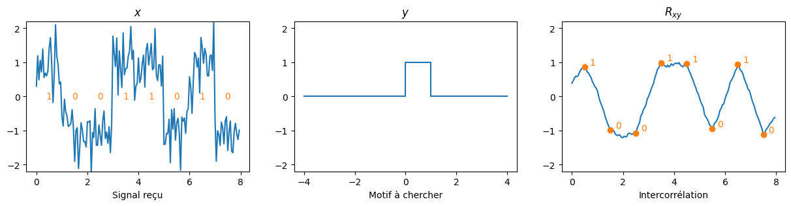

Communications numériques#
En communications numériques, il n’est pas rare que le récepteur du sytème de communication reçoive un signal de l’émetteur qui soit très brouillé (on dit qu’il est bruité). Par exemple, si le récepteur reçoit le signal \(x\) représenté ci-dessous, et que ce signal est en réalité une suite d’échelons d’amplitude −1 (représentant le bit 0) ou +1 (représentant le bit 1), alors l’intercorrélation de \(x\) avec un échelon \(y\) permet de détecter à chaque instant si le signal reçu ressemble à \(y\) (dans ce cas, on a reçu un 1) ou pas (on a reçu un 0).
import numpy as np
import matplotlib.pyplot as plt
from IPython.display import Audio
# Initialisation de l'affichage
ylim = [-2.2, 2.2]
fig, axs = plt.subplots(1, 3, figsize=(15,3))
# Message
msg = np.array([1, 0, 0, 1, 1, 0, 1, 0])
M = len(msg)
# Temps & instants d'échantillonnage
Fe = 20
n = np.arange(0, M, 1/Fe)
idx = np.arange(M)*Fe + Fe//2
# Forme d'onde
h = np.ones(Fe)
# Signal émis
x = np.kron(2*msg-1, h)
# Signal reçu (bruité)
b = np.random.normal(0, .5, x.shape)
y = x + b
axs[0].plot(n,y)
for i in range(M):
axs[0].text(n[idx[i]], 0, msg[i], ha="center", va="center", color="C1")
axs[0].set_title('$x$')
axs[0].set_xlabel('Signal reçu')
axs[0].set_ylim(ylim)
# Forme d'onde (graphique)
axs[1].plot([-4, 0, 0, 1, 1, 4], [0, 0, 1, 1, 0, 0])
axs[1].set_title('$y$')
axs[1].set_xlabel('Motif à chercher')
axs[1].set_ylim(ylim)
# Intercorrélation
z = np.correlate(y, h/Fe, mode="same")
axs[2].plot(n, z)
for i in range(M):
axs[2].plot(n[idx[i]], z[idx[i]], "C1o")
axs[2].text(n[idx[i]]+.2, z[idx[i]], msg[i], ha="left", va="bottom", color="C1")
axs[2].set_title("$R_{xy}$")
axs[2].set_xlabel('Intercorrélation')
axs[2].set_ylim(ylim)
plt.savefig("communications.svg", bbox_inches="tight")

Intercorrélation de \(x\) avec \(y\). Le signal \(x\) véhicule le message 10011010 codé en
NRZ avec le motif \(y\).